A git project release model.
Git-Rolling-Release is a means of using a simpler development workflow (such as GitHub Flow) but still allowing for a formalised release cycle.
All code that is ready for release is on a master branch, but releases are determined by tags along this branch, and only this branch. Releases are therefore never dictated by branch merges, resulting in zero chance of merge conflicts or dead working branches. Git-Rolling-Release also allows for multiple releases that have varying release cycles.
We'll be honest that we're using the "rolling release" name incorrectly from a technical standpoint. It's more of a "pseudo-rolling release" structure, but it was difficult enough trying to find a succint enough name! Our aim is to stabalise a heavily developed master branch (which you may also be using for a truer rolling release cycle) for those deployment situations in your environment that you require it.
For the same reasons laid out by Scott Chacon, we agreed that the whole work flow required too much overhead for our requirements. We wanted a flexible and fast workflow, but with staggered releases due to the business critical nature of some of our projects.
The less time spent merging and managing code across feature, develop, release and master branches, the more time we can spend developing.
GitHub Flow, by design, requires that all code on the master branch is deployable and is deployed asap. If a structured release cycle is required, you can simply git tag a release, but hotfixes quickly become a major problem. Since all work is done on the master branch, to implement a hotfix would require bringing the current release tag down the master branch, bringing in all features and bugfixes made since the original tagged release. This undermines the stability required for release cycles in the first place.
If we take the best of both worlds of Git Flow and GitHub Flow, then we can achieve exactly what we want: a simple development workflow for all our coders but stable, staggered releases.
The Git-Rolling-Release method allows for multiple, concurrent releases based on just one branch.
Git-Rolling-Release is not a workflow, it is a release model, since the workflow concerns how the code ends up on the master branch.
Every time a release is to be created, 2 things happen:
live-2013.05.06live-currentThe lightweight 'current' tag is a constantly updated marker of the current release. This means that the deployment system always uses this tag as the deployable code and is constantly synced to servers.
The annotated tag is simply a milestone tag to indicate when the release was created and should never be updated. These can be used by developers to debug a specific release or for rolling back a release.

For the purposes of the Git-Rolling-Release model, the definition of a hotfix is a patch to a business critical bug present in a current release. They should only be used in urgent situations.
With Git-Rolling-Release, a hotfix is applied by cherry-picking a commit from the master branch, and only from the master branch. Therefore, the hotfix has already been made to the core application and simply needs to be applied to the release tag.
Technically, Git-Rolling-Release creates a branch at the point of the 'current' release, cherry-picks the commit and updates the release to this point. The current release is no longer down the master branch, but since the hotfix was applied from the master branch, the next release will not present any regression issues (since it will then be back on the master branch).
Assuming that hotfixes are small commits (otherwise, how did the feature pass testing or build in the first place?), no conflicts should occur.
In the absolute worst case scenario that a simple hotfix is not sufficient (really, was this tested at all?), the release can simply be rolled back to the previous milestone tag.
Git-Rolling-Release will update the 'current' tag to the required previous release tag. Since the deployed code is based on this tag, the rolled back code will be synced out.
Yes, the git manual does have an entire discussion (well, not so much a discussion but just telling you not to) on re-tagging. But the only moving tags are the 'current' release markers. Indeed, these should never be used by developers on the project. Instead, they should only use the milestone tags if and when required.
The real beauty of Git-Rolling-Release comes when you have multiple releases to maintain. A developers nightmare scenario is when the same project has to be maintained across multiple branches or codebases that can quickly become disjointed and merges slowly become a pain to handle.
Since all releases are based on a 'current' tag, this allows Git-Rolling-Release to handle multiple releases.
Over a two week period, 2 releases are generated.
In this form, the staging release is similar to a release candidate, and is deployed to all development servers. The last staging release is unchanged for a week (although can be hotfixed), after which the live release is re-generated.
You can then even extend this further so that another release can be on an even slower cycle, e.g. client releases.